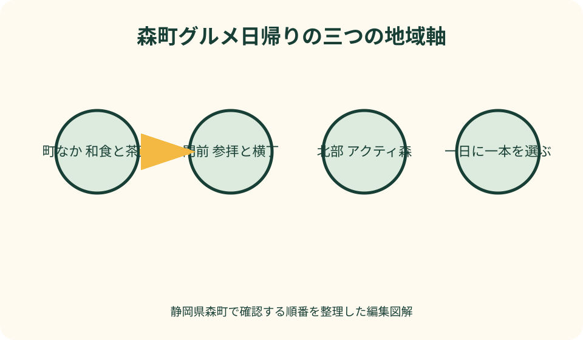
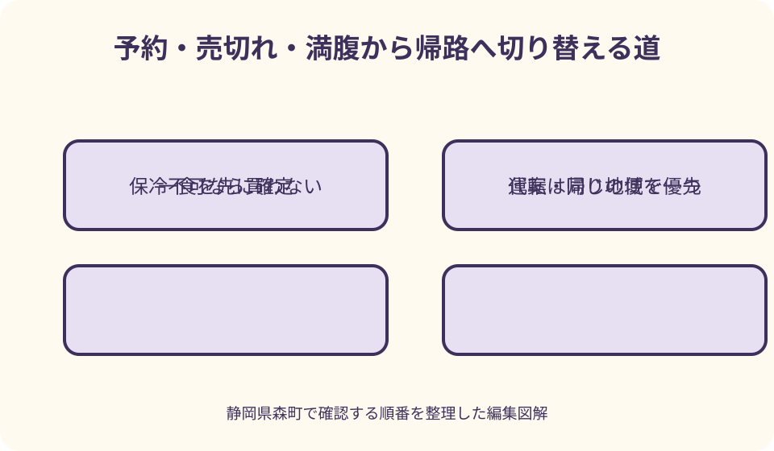

森町グルメ・日帰り旅｜最終確認 2026-08-10
静岡県森町のグルメ日帰りモデルコース｜茶・和菓子・食事を一日に詰めすぎない
遠州の小京都と呼ばれる森町は、観光協会が茶、和菓子、農産物を町の特色として紹介し、町なか、ことまち横丁、アクティ森で異なる食の過ごし方ができます。ただし、三地域を同じ日に食べ歩けば充実するとは限りません。店の営業、予約、売切れ、移動、保冷、運転者の休憩を考えると、一日に選ぶのは一つの地域軸が基本です。本記事は店をランキングせず、町なか和食と茶・和菓子、小國神社と横丁、アクティ森の三案を示します。訪問日に公式情報へ戻り、満腹や閉店なら購入を増やさず終えます。

編集イラスト三つの地域軸から一つだけ選ぶ
日帰りの最初に、町なか、小國神社門前、アクティ森のどこで昼食を取るか決めます。昼食の場所が決まれば、茶や和菓子を同じ周辺で選べます。三地域の人気商品を一日で集める予定にはしません。
町なか案は、遠州森駅周辺から森地区の店や町並みを組み合わせたい人向けです。和食を一食取り、茶舗または和菓子店へ一店ずつ寄ります。公共交通での到着と徒歩距離を先に確認します。
門前案は、小國神社への参拝とことまち横丁を同じ目的地として扱いたい人向けです。横丁には食事、甘味、茶、土産の店舗が公式掲載されています。参拝を先にするかは空腹と帰りの便で決めます。
アクティ森案は、車で北部へ向かい、レストランと特産品販売、体験の一部を一か所周辺で組みたい人向けです。2026年に運営内容の更新があるため、古い営業時間や施設名を前提にしません。
この記事は各店を実食して順位付けする企画ではありません。2026年8月10日に確認した森町、観光協会、各施設の公式情報を基に、日帰りの選択基準をまとめています。味の評価や所要の保証は行いません。
森町の茶と和菓子を土地の文脈から知る
森町観光協会は、茶を森町の特産として紹介し、茶に合う和菓子へこだわる店や老舗が多いと案内しています。これは町の食文化を知る入口であり、掲載された全商品が毎日そろうという販売保証ではありません。
観光協会の特産品案内には、茶の事業者と和菓子の例が掲載されています。梅衣、次郎柿羊羹、みそまんじゅうなどの名称を知っても、原材料、賞味期限、在庫は商品表示と店頭で確認します。
遠州の小京都という呼称は、景観だけでなく、茶、和菓子、農産物、森山焼などの産業と文化を含めて説明されています。食べ物だけを消費する旅にせず、町並みや寺社の位置を地図で一つ確認すると背景が見えます。
茶を買う時は、煎茶、くき茶、ティーバッグなどの形だけでなく、急須の有無、家族の消費量、保存場所を伝えます。大量の品を得だと判断せず、開封後に飲み切れる量を選びます。
和菓子は、当日食べる生菓子、日持ちを確認して持帰る品、贈答品に分けます。写真だけで常温保存できると考えず、直射日光、温度、賞味期限、個包装の有無を店へ尋ねます。
コースA：町なか和食を中心に茶・和菓子を加える
町なかコースは、昼食を取る店を一つ決めるところから始めます。観光協会の飲食案内や各店公式で営業日、昼の注文時間、予約可否、駐車場を確認し、古い口コミの営業時間だけで出発しません。
昼食前に和菓子を複数買うと、空腹と土産選びが混ざります。午前は町並みを短く歩き、予約品の受取があれば済ませ、昼は和食一食に集中します。甘味は食後の体調を見て一つ選びます。
和食という分類だけで、子ども、高齢者、アレルギーのある人に適するとは決まりません。座席、段差、量、辛さ、骨、原材料、共用調理器具を必要な範囲で予約時または注文前に質問します。
茶店では、試飲があると期待せず、その日受けられる説明に従います。自宅用は普段の湯温や抽出器具、贈答用は相手が急須を持つかを伝えます。迷うなら小包装やティーバッグを候補にします。
午後は和菓子店を一店選び、持帰り条件を確認して終えます。店を連続して回るより、森町観光パンフレットで町並みや寺社を一か所選び、食間に歩く時間を置きます。
町なかを車なしで巡る時は帰りの便から組む
森町には天竜浜名湖鉄道の駅が複数あり、町公式は鉄道、民間路線バス、町営バスなどの公共交通情報を案内しています。車なしの旅は遠州森駅など利用駅を決め、帰りの時刻から逆算します。
駅から店までの距離は地図の直線で判断せず、歩道、踏切、坂、信号を含む経路で見ます。和菓子や茶の荷物が増える帰路は、往路より歩みが遅くなる前提で余白を取ります。
路線ごとに運行日や本数が異なるため、時刻を本記事へ固定しません。出発日に運行事業者と森町公式を開き、乗り場、支払方法、帰りの便を保存します。臨時変更は現地表示を優先します。
昼食の予約時間を列車到着直後へ置くと、遅延や道迷いに対応できません。店へ到着猶予を確認し、難しければ予約をせず開店状況を当日尋ねるなど、店の運用に合わせます。
持帰り品は、両手がふさがらない量にします。冷蔵品や形が崩れやすい菓子を長く持つ場合は、保冷方法を店へ相談し、適切に運べないなら常温で表示を確認できる品へ替えます。

コースB：小國神社を参拝して横丁で一食を選ぶ
門前コースでは、小國神社参拝を外したくない目的に置きます。朝食を取れていて元気なら、参拝後にことまち横丁へ進みます。買い物袋を増やさず神域へ向かえるため、順序が明確です。
門前の公式店舗一覧では、茶を扱う店、カフェ、カフェテリア、米菓の店などを確認できます。食事、甘味、茶土産を全部選ばず、昼食なら主食一品を先に確定します。
昼時に着き、同行者の空腹が強い場合は、横丁で短く食事をしてから参拝する方法もあります。食べ歩きながら参道へ向かわず、指定場所で食べ、手と容器を整えてから移ります。
宮川沿いの散策は、食後の消化時間として必ず歩く予定にはしません。雨、増水、落葉、暑さ、同行者の疲れを見て、安全な通路から一地点を眺めるか、完全に省きます。
横丁の商品が売り切れても、参拝を終えていれば旅の主目的は残ります。別商品を大量に買って埋め合わせず、密封された茶や菓子が必要かを考え、なければ買い物なしで帰ります。
門前では混雑・駐車・バスを食事時間へ含める
小國神社と横丁の公式は、無料駐車場約700台を案内しています。この数はいつでも近い区画へ停められる保証ではありません。紅葉期や正月などは交通規制の可能性があるため、駐車待ちを食事の外へ追い出しません。
車は現地の誘導に従い、駐車区画と帰り道を記録します。空腹のまま近い場所を探し続けず、案内された区画へ停めます。歩行距離が増えたら宮川や追加の買い物を減らします。
公共交通では、袋井駅や遠州森駅方面からの路線バスについて運行日と帰りの便を確認します。注文待ちが長い場合に一本遅らせられるとは限らないため、発車前の余白を固定します。
横丁の営業時間と各店の注文終了は同じとは限りません。公式トップに掲載された時間だけで料理の受取を保証せず、店頭で営業中か、売切れか、提供に要する見込みを聞きます。
混雑時に家族や友人が別々の列へ並ぶなら、注文の重複を防ぐため共有します。連絡が取れない場合の合流場所を決め、食事を受け取った人だけが先に食べ始めて同行者が見つからない状態を避けます。
コースC：アクティ森で食事と特産品をまとめる
アクティ森は森町北部の複合型体験施設として町公式に掲載され、レストランと特産品販売所も案内されています。食事と買い物を同じ施設周辺へまとめたい家族に向く候補です。
ただし、森町は2026年5月のリニューアルオープンを案内しています。2020年更新の施設ページにある営業時間や旧設備をそのまま現在の保証にせず、新しい公式サイト、町のお知らせ、施設への問い合わせで確認します。
レストラン利用を中心にする日は、席、営業、注文終了、団体利用、予約可否を事前に尋ねます。体験を先に入れて昼食へ遅れないよう、受付時間と食事の優先順位を別々に確認します。
特産品販売では、茶、和洋菓子、農産物などの当日在庫を見ます。地域の商品が集まる利点はありますが、特定の品が必ずあるとは限りません。贈答は包装、賞味期限、発送の可否を尋ねます。
アクティ森の食事後に町なかと横丁まで回る計画は、移動と満腹を増やします。午後に追加するなら、予約した受取一件だけなど目的を限定し、通常は施設内の買い物で日帰りを終えます。
予約と売切れは第一候補より代案を先に決める
予約できる店でも、席だけか料理を含むか、遅刻時の扱い、人数変更、キャンセルを確認します。予約したことで全商品が確保されるとは考えず、希望品の取置き可否は別に尋ねます。
予約を受けない店では、開店前から長く待つ予定にせず、当日営業を確認してから向かいます。列が長ければ、同じ地域内の第二候補、持帰り、食事を別地域へ移さず帰る、の順に考えます。
和菓子の売切れは、甘い物を追加購入して埋め合わせる理由にしません。茶だけ買う、別の日に予約方法を確認する、公式通販の有無を店へ尋ねるなど、摂取量を増やさない代案があります。
ランチが終了した場合は、菓子だけで一食を済ませず、食事を取れる安全な別候補を地図で確認します。閉店が重なる時間帯なら森町内を走り回らず、帰路の営業中施設へ変更します。
イベント日は通常営業が変わる可能性があります。年間行事や施設のお知らせを出発前に確認し、予約を持っていても道路規制や臨時運用について店の案内に従います。
保冷と持帰りは購入順で安全性を変える
生菓子、冷蔵品、農産物は、購入時に保存温度、消費または賞味期限、保冷剤の持続目安を聞きます。一般論で保冷バッグへ入れれば一日安全と決めず、商品の表示と店の説明を優先します。
冷たい品は基本的に帰宅前へ回します。町なかで午前に買い、横丁やアクティ森を長時間巡る計画にはしません。取置きできるかは店へ相談し、対応不可なら別の商品へ替えます。
車内は季節を問わず日射や温度変化があります。トランクへ入れれば冷えるとは考えず、保冷箱の置き場所と温度を管理します。車へ品を置いたまま長い散策をしません。
公共交通では、保冷剤の重さと帰宅時間を含めます。乗換えが多く適切な温度を保てない場合、常温保存の商品、発送、購入しない選択を店と相談します。
茶葉も湿気、熱、光、強いにおいを避けます。冷蔵の可否は商品表示を見て、濡れた保冷剤と同じ袋に直接入れません。開封日を記録し、家庭で飲み切れる量だけを買います。
運転者の食事と休憩を旅の中心に置く
車の日帰りは、最も食べたい人ではなく運転者が安全に帰れる計画にします。酒類やアルコールを含む飲食物を運転者が選ばないことはもちろん、表示が不明な商品は店へ確認します。
満腹は眠気につながる場合があります。一度に多く注文せず、昼食後に休憩を取り、運転者が眠い、重いと感じたら出発を延ばすか追加の立寄りをやめます。
茶やコーヒーを飲めば休憩が不要になるわけではありません。カフェインへの反応は人によって異なります。水分、適切な休憩、交代運転の可否を事前に考えます。
家族や友人は、運転者に駐車場探し、予約連絡、荷物管理を集中させません。同乗者が店の営業を確認し、土産をまとめ、帰路を案内します。運転者だけが食事を急ぐ日程を避けます。
帰宅途中にもう一店寄りたくなっても、運転者の疲れを最優先します。買えなかった品は次回の記録に残し、非公式な近道や閉店間際の急行で取り戻そうとしません。

満腹・閉店・雨天では食べる量を足さない
予定した和菓子店へ着いても満腹なら、当日食べる品を追加しません。日持ちと保存を確認した少量の土産にするか、商品名だけ記録して次回へ回します。旅の達成を購入数で測らないことが大切です。
店が閉まっていた時は、町内を次々と移動して営業時間へ追いつこうとしません。公式の臨時休業を確認し、同じ地域内で安全に入れる第二候補がなければ、茶または食事の片方だけで終えます。
雨天の町なか歩きは、傘、荷物、歩道の状態を見て短くします。横丁では宮川を外し、アクティ森では屋外体験を別日にします。食事のために危険な移動を続けません。
アレルギーや食事制限の確認が取れない場合も、空腹を理由に購入しません。表示を確認できる密封品、持参食、帰路の確実な食事場所へ切り替えます。薬と緊急連絡先はすぐ使える場所へ持ちます。
複数の変更が重なった日は、観光を続けるより帰宅を選びます。冷蔵品を持っている、運転者が疲れた、帰りの列車が迫る場合は、寺社や土産の追加をすべて外します。
良い点：茶・和菓子・食事を地域の違いで選べる
森町の良い点は、茶と和菓子だけでなく、町なかの食事、門前の横丁、自然体験施設のレストランという異なる場面を選べることです。同行者と交通手段に合う一地域へ絞れます。
観光協会が特産品と散策情報をまとめ、森町が観光パンフレットを公開しているため、食と町の歴史をつなげる手掛かりがあります。店の紹介だけでなく、位置関係や文化を出発前に確認できます。
町なかは公共交通と徒歩を検討でき、門前は参拝と食を組み合わせられ、アクティ森は食事と特産品を一施設周辺へまとめられます。それぞれの利点は、最新の運行と営業を確認した時に成り立ちます。
持帰り可能な茶や和菓子があれば、その場で食べ切る必要がありません。食後の満腹を見て、未開封で適切に運べる品だけを少量選び、自宅で時間を分けて楽しめます。
季節や同行者によって同じ町でも別の一日を作れます。初回は町なか、次回は門前というように分ければ、店の数を増やさず、確認と移動に余裕を持てます。
注文したい点：営業・交通・保存情報を地図で結びたい
飲食店、茶店、和菓子店について、公式の所在地、営業、注文終了、予約、駐車、公共交通を同じ地図から確認できると、日帰りの判断が容易になります。更新日と店への確認先も必要です。
特産品案内には、商品名だけでなく、要冷蔵、常温、発送相談、予約可能など持帰りの判断項目が加わると助かります。価格や在庫を固定せず、最終確認先へつなぐ形が実用的です。
車なしの旅行者には、駅とバス停から店までの歩行経路、坂、歩道、帰りの最終確認方法が重要です。時刻表を転載するより、運行元の最新ページへ迷わず進める導線が望まれます。
アクティ森はリニューアル後の営業、レストラン、販売、体験の情報を一つにそろえ、古い町ページとの違いが分かると安心です。訪問者が新しい公式案内を優先できる表示が必要です。
催しや季節の混雑日には、飲食の臨時営業、売切れ、交通規制を横断して確認できる案内があると役立ちます。待ち時間を保証しなくても、当日の変更が分かれば店を回り続けずに済みます。
代案・結論：一食・一杯・一箱までを基本にする
前日までに、町なか、門前、アクティ森の一つを選び、昼食の営業と予約、交通、帰る時刻を確認します。茶または和菓子は一店を第一候補にし、保冷が必要かを問い合わせます。
当日は、一食を落ち着いて取り、茶を一杯または一袋、和菓子を一箱までというように上限を決めます。数字は購入義務ではなく、満腹と荷物を増やさないための目安です。
第一候補が閉店なら同じ地域の代案を一つ確認し、売切れなら買わずに終える選択を使います。別地域へ急いで移動して三コースをつなげません。
車は運転者の休憩と保冷、車なしは帰りの便と持てる重さを優先します。訪問先を離れる前に、商品表示、保冷剤、忘れ物、乗り場または駐車位置を確認します。
結論は、森町のグルメ日帰りを食べた品数で完成させないことです。一地域で一食を取り、茶か和菓子を背景とともに知り、安全に持帰れれば、その日は十分に森町の食へ触れています。
大石の視点：次回へつなぐ食の記録を家族で残す
私（大石）は、地域の食を知る日は、評判の店を制覇するより、店がある町並みと移動の負担を一緒に見ます。食べられなかった品があっても、次回の目的が一つ残ったと考えます。
帰宅後には、訪問日、営業を確認した公式ページ、利用交通、駐車場所、予約条件、売切れた時刻ではなく見た事実、保冷方法を記録します。次回も同じ条件だと決めず、再確認の欄を付けます。
贈答品は、誰へ何を渡したか、急須の有無、アレルギー、保存場所を家族で共有します。善意で大量の茶や菓子を送らず、相手が受け取り、期限内に使える量を先に尋ねます。
実家や土地を訪ねる用事と食事を組み合わせる場合も、境界や建物確認の後へ店を詰め込みません。空き家の換気、道路、家族との打合せを先に終え、食事は一か所で休む時間として置きます。
この記事の確認日は2026年8月10日です。店舗、商品、施設、交通は変更される場合があります。森町と観光協会、各事業者の公式案内を出発日に確認し、体調、運転、保冷のどれかに無理があれば、買わずに帰る選択を残してください。
公式情報・確認先
掲載内容は次の一次情報を基礎に整理しました。営業、料金、催し、交通は変わるため、出発前または手続き前にリンク先で最新情報を確認してください。
- 観光（静岡県森町、2026-08-10確認）
- 観光パンフレット（静岡県森町、2026-08-10確認）
- 森町の公共交通について（静岡県森町、2026-08-10確認）
- 森町体験の里アクティ森リニューアルオープンについて（静岡県森町、2026-08-10確認）
- 特産品・お土産（森町観光協会、2026-08-10確認）
- 森町について（森町観光協会、2026-08-10確認）
- 小國ことまち横丁（小國ことまち横丁、2026-08-10確認）
- 森町体験の里 アクティ森（静岡県森町、2026-08-10確認）